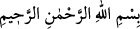
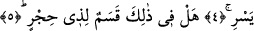

FECRE YEMİN OLSUN
Bismillâhirrahmânirrahîm
1. Fecre yemin olsun ki,
2. On geceye (haccın on gecesine),
3. Çifte ve teke,
4. Geçip gittiği vakit geceye andolsun,
5. Akıl sâhibi için bunlarda elbette bir yemin (değeri) var, değil mi?
Keşfu’l-esrâr’da ifâde edildiğine göre Araplar en çok yemin eden bir millet
olduklarından Kur’an yemin konusunda onların âdeti üzere gelmiştir.
Fecr iki çeşittir. Birisi kurdun kuyruğu gibi dik olarak yukardan ufka doğru inen
fecirdir ki buna fecr-i kâzib/yalancı fecr derler. Bunun doğmasıyla herhangi bir şer’î
hüküm meydana gelmez. Diğeri ise ufka doğru yayılan fecir/tan yeri ağarmasıdır. Bu
fecr-i sâdıktır ki oruç ve namaz vakti bununla ilgilidir.
Allah bu âyette fecre yemin etmiştir. Fecr güneş ışığının doğu ufkunda ortaya çıktığı
vakittir. Allah Teâlâ sabaha da yemin ederek “ağarmaya başladığında sabaha
andolsun” (Tekvir, 81/18) buyurmuştur. Çünkü sabah vaktinin girmesiyle gece sona
erer. Böylece ortalık aydınlanır; rızık talebiyle insanlar, kuşlar ve vahşi hayvanlar gibi
diğer canlılar yeryüzüne yayılır. Bu ölülerin kabirlerinden kalkmalarına benzer. Bunda
düşünenler için büyük bir ibret vardır.
Kâşifî der ki: “Sabaha yemindir, zira sabah dostların münâcât vaktidir.”
Ya da bu âyette arefe gününün sabahına yemin edilmiştir. Çünkü arefe sabahı çok
şerefli bir gündür. Hacılar o gün Arafat dağına doğru yola çıkarlar. Bir hadiste “Hac,
Arafat’tan ibârettir.” [90] buyrulmuştur. Yani Arafe gününün sabahına kasemdir ki
hacıların duâ ve niyaz vazifeleri bu sabahta olur.
Ya da bu âyette nahr/kurban bayramı sabahına yemin edilmiştir. Çünkü o gün de büyük
bir gündür. O gün farz olan tavaf yapılır, saç traş edilir ve şeytan taşlanır. Nahr gününün
hacc-ı ekber günü olduğu da rivâyet edilmiştir.[91]
Bir kavle göre sabahtan maksad; yıl kendisiyle başladığı için Muharrem’in birinci
günü ya da fakirlerin haccı olan Cuma sabahıdır.